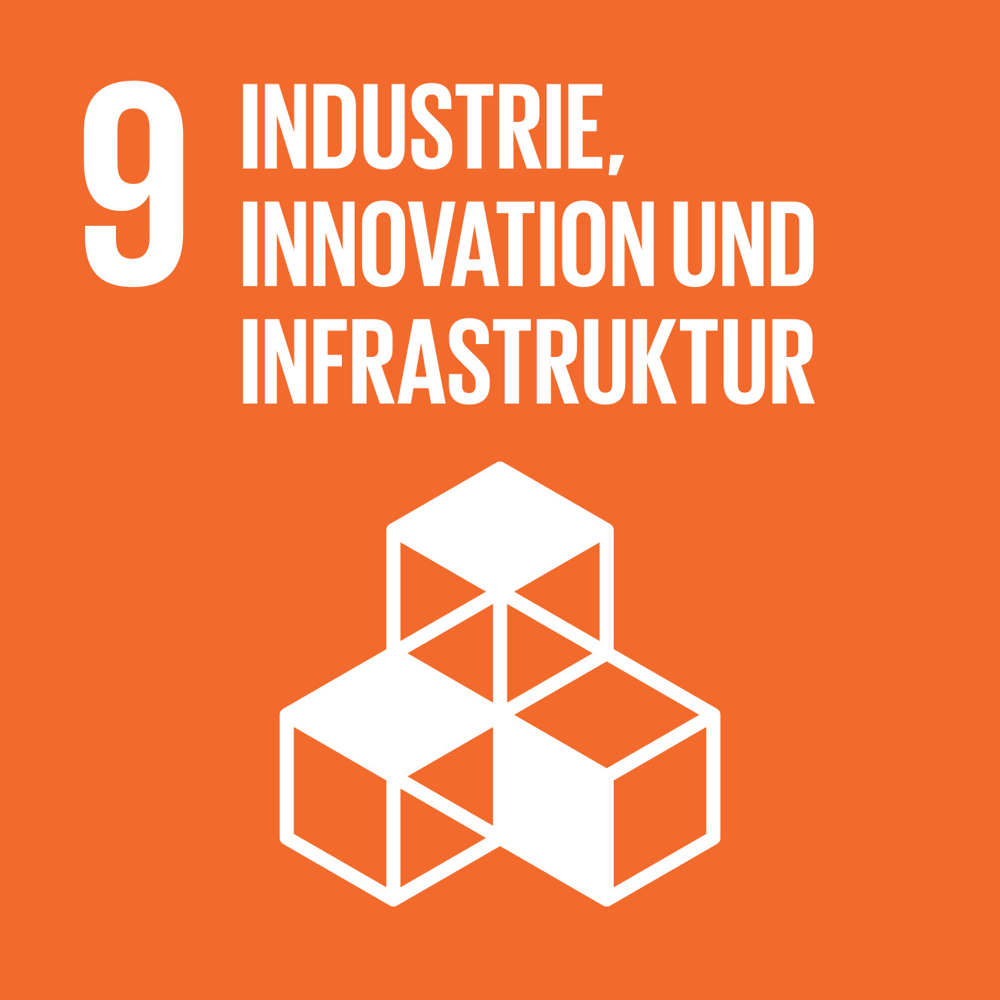

Nachhaltiges Bauen an der FernUni
SDG 9: Industrie, Innovation und Infrastruktur

Eine widerstandsfähige Infrastruktur aufbauen, breitenwirksame und nachhaltige Industrialisierung fördern und Innovationen unterstützen
Warum ist das Psychologie-Gebäude so interessant?
Das neue Gebäude ist sehr interressant, da die FernUni als eigener Bauleiter gilt. Dies ist normalerweise nicht der Fall. Universitäten sind eigentlich Mieter beim Land NRW,
dieses hat eine eigene Organisation, die sich um Neubauten kümmert. Hier war jedoch das Problem, dass der Vermieter der FernUni (BLB NRW) nicht genug Kapazität
und Zeit hatte, um das neue Gebäude zu bauen. Daher hat sich die Universität
dazu entschieden, den Bau selber anzugehen, weswegen sie nun als eigener Bauherr auftritt und sich alleine um den Bau des neuen Gebäudes kümmert.
Zudem wird das Gebäude mit Geothermie und Wärmepumpen unterstützt. Dadurch kann sich das Gebäude ausschließlich mit erneuerbaren Energien betreiben und benötigt keine
fossilen Brennstoffe um sich beispielsweise aufzuwärmen.

Planung des Baus: besondere Berücksichtigungen
Da es sich um ein Büro/Verwaltungsbau handelt, gab es nichts Besonderes beim Bau zu beachten, da es sich um keine besondere Statik oder Konstruktion handelt.
Allerdings mussten beim Bau des Gebäudes die "neuen" Auflagen des Landes NRW beachtet werden. Diese verlangt, dass alle Neubauten nach einem Nachhaltigkeits-Zertifikat gebaut werden,
dies nennt sich BNB (Bewertungskriterien nachhaltiges bauen). Dort gibt es einen Bronze-, Silber- und Gold-Status, wobei alle Bauten vom Land den Silberstatus benötigen. Dies ist wichtig,
da das Land ansonsten nicht die Kosten für den Bau übernimmt.
Nachhatiges Bauen brücksichtigt hier: ökologische, Ökonomische, technische und soziokulturelle Aspekte.
Ökologische Aspekte beinhalten z.B. Energieeffizienz, Materialwahl und Abfallminimierung, wobei ökonomische Aspekte z.B. die Baukosten,
Finanzierung und das Zeit- sowie Risiko-Managment beinhält. Technische Aspekte berücksichitgen z.B. die Bautechnik, das architektonische Design und die Bauplanung.
Und die soziologische Aspekte berücksichtigen z.B. die sozialen Bedürfnisse sowie die Zugänglichkeit und soziale Gerechtigkeit.
Hierbei geht es außerdem um sowas wie Ergonomie am Arbeitsplatz oder auch Ladeinfrastruktur. Diese werden dann von einem Auditorium auf einer Checkliste bewertet.
Hierbei könnte die Uni sogar Gold-Status erreichen, was das erste öffentliche Gebäude in NRW wäre, das diesen Status erreicht hat.
Erneuerbare Energien an der FernUni
Hier an der FernUni werden erstmal nur die PV (Photovoltaik)-Anlagen benutzt, die auf die Dächer kommen werden. Dabei handelt es sich hier um eine Kopplung von PV und Geothermie.
Für den Test, ob das Gelände für Geothermie geeignet ist, wurden 40 Bohrungen zwischen 80-100m Tiefe gemacht. Dabei muss der Boden bestimmte Werte abgeben, um zu sehen, ob es
Sinn macht, Geothermie einzusetzen. In dem Gebäude ist ein sogenannter "Energieboden" verbaut. Dies ist ein doppelter Boden, in dem sich Plastikrohre befinden, durch die warmes Wasser gepumpt
wird, dieser funktioniert dann wie eine Fußbodenheizung im Winter und kann im Sommer etwas Wärme aus dem Gebäude abführen, um es abzukühlen.
Dies befindet sich auf allen Etagen des Gebäudes.

Beitrag der FernUni zum nachhaltigen Bauen
Bei Instandhaltungsmaßnamen versucht die FernUni bei z.B. Dacherneuerungen herauzufinden, ob man dort eventuell eine Grünalage anbauen könnte oder sich dort PV-Anlagen lohnen könnten.
So wird jede Instandhaltungsmaßnahme auf Nachhaltigkeit überprüft, um den Beitrag auch bei "alten" Sachen zu maximieren. Zudem wird bei dem Bau des neuen Gebäudes recycelter Beton benutzt
und auf Parkplatz 1 des Geländes sind 6 Ladesäulen stationiert.

Wie lange dauert der Bau des Gebäudes?
Die Abnahme des Gebäudes findet am 30.11.23 statt. Bis Weihnachten werden jedoch wohlmöglich noch Mängel beseitigt werden müssen, Einzug ist für Februar nächsten Jahres vorgesehen.
Der Bau des Gebäudes begann Weihnachten letzen Jahres, wobei sie nur ca. 1 Jahr brauchten, um das Gebäude zu bauen. Dies wurde durch die Modulbauweise ermöglicht. Dies funktioniert so, dass
schon fertige Teile geliefert werden und noch zusammengesetzt werden müssen.

Wer wird dort einziehen?
Einziehen wird in das neue Gebäude die komplette psychologische Fakultät.